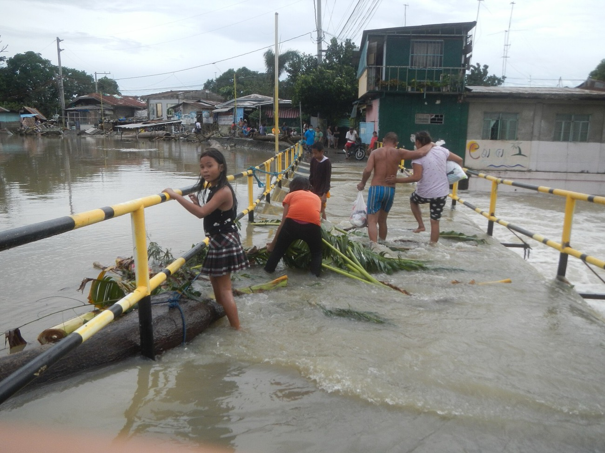
Climate Change
Long-term shifts in weather patterns and temperature.
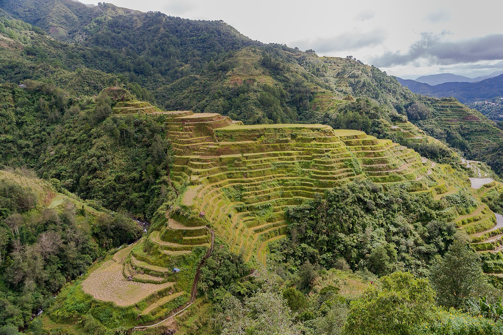
Values Education 9 · Term 2 · Lesson 5
Maka-Kalikasan: Taking Care of Our Only Home
Nature vibes for life: how families care for and preserve God’s creation
Lesson Overview
By the end of this lesson, you will:
Identify the family’s responsibilities in caring for and enriching nature.
Demonstrate that each member’s duty in caring for nature is important.
Implement personal ways of caring for nature with family support.
Essential Question
How can families contribute to the care and preservation of nature?
Opening Thought
“As people alive today, we must consider future generations: a clean environment is a human right like any other. It is therefore part of our responsibility toward others to ensure that the world we pass on is as healthy, if not healthier, than we found it.”
Dalai Lama
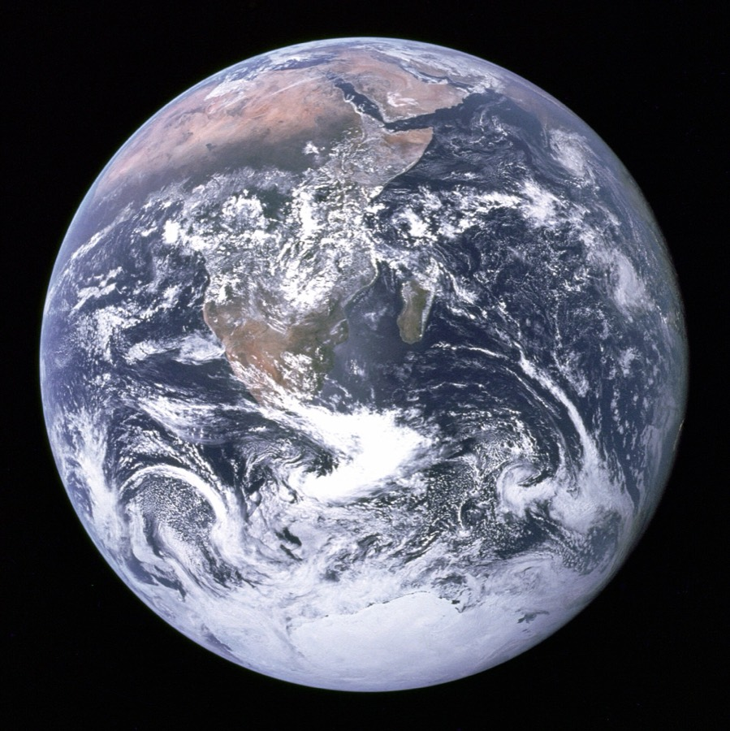
Warm-up Vibes
Fill each square with an eco-action your family does.
Check off the actions you complete together at home.
Back in class, play. Call out “Eco Bingo!” when you complete a line.
Share which actions are most common.
Set a family challenge: one new eco-action.
Eco Bingo Card
Eco Bingo!
Warm-up Vibes
What eco-friendly actions do you practice at home, and which do you want to adopt next?
How do you feel when you care for the environment as a family?
What challenges have you faced in being eco-friendly at home, and how did you overcome them?
Why is it important for families to work together for the environment?
What are the most impactful changes families can make for the planet?
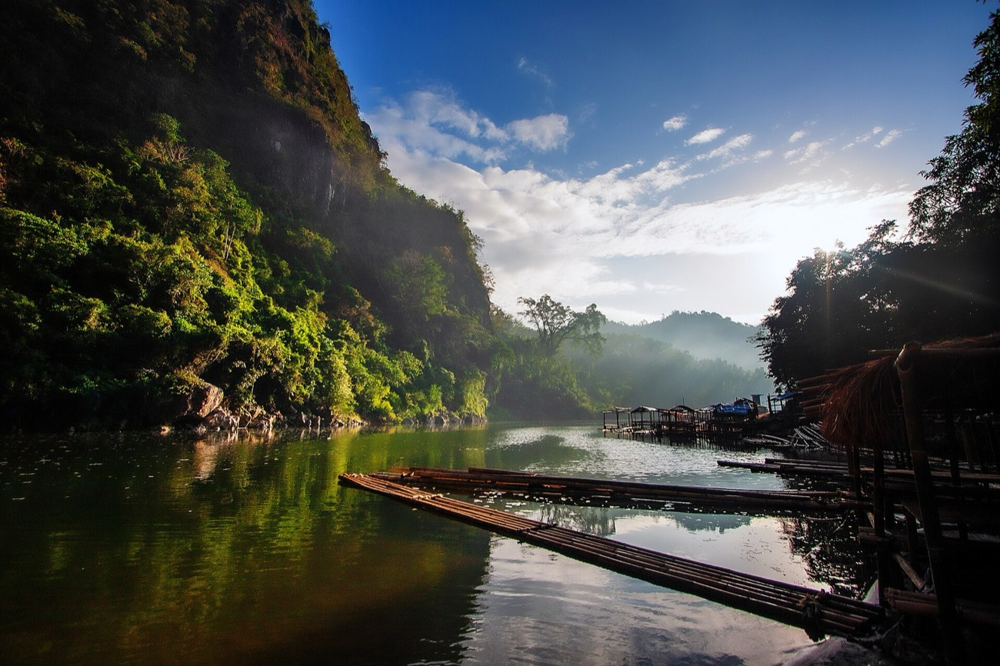
Take a Look
Your parents and grandparents can tell you stories of crystal-clear rivers, mountains covered with trees, and vast land for planting.
Modern technology makes life easier, but it also harms our environment. We must act with urgency to protect our only home.
Where do you still see nature’s beauty where you live?
Nature Vibes for Life
Nature is a beautiful gift from God, and it is our responsibility to take care of it.
Just as families keep a clean and safe home, we work together to care for the environment.
Every small effort counts
Recycling
Conserving water
Planting trees
Scripture
“The earth is the LORD’s, and the fulness thereof; the world, and they that dwell therein.”
Psalm 24:1 (KJV)
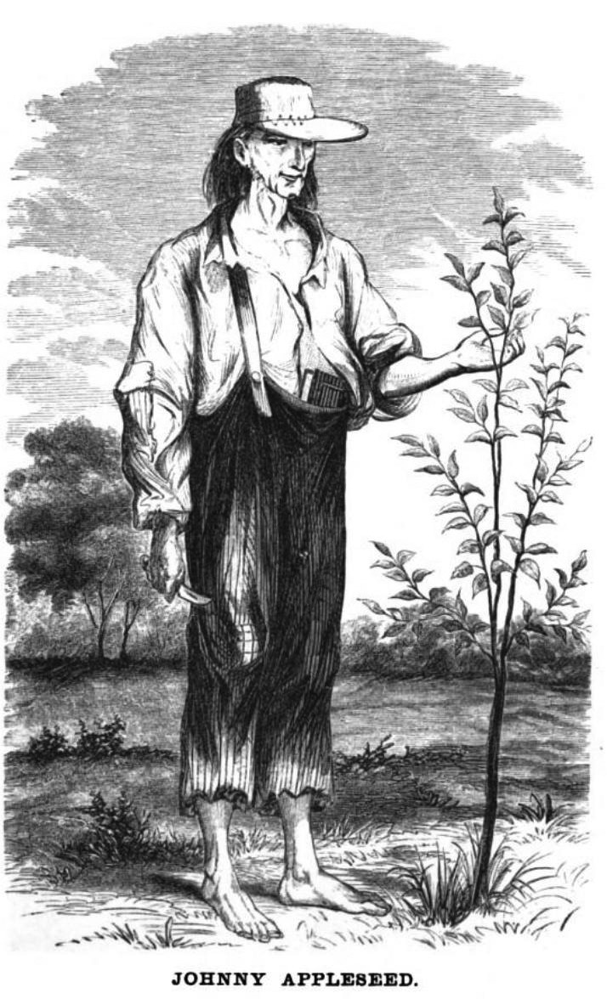
Opening Activity
John Chapman, “Johnny Appleseed,” lost his mother as a child. He made it his life’s mission to plant fruit trees across the underdeveloped parts of his country, carrying leather bags of apple seeds on horseback or on foot.
1774
Born in Massachusetts
46
Years spent planting trees
100,000
Square miles covered by his trees
1845
Died at the age of 72
Opening Activity
He inspired many people to take their role in caring for the environment seriously. Answer in two to three sentences.
What personal mission did Johnny Appleseed set for himself?
What is the importance of planting trees?
3 · Research
Do you know a town, church, company, or family that plants trees as part of its mission?
Research them and describe their advocacy.
Think and Ponder
Stewardship is our responsibility to protect and take care of the earth.
Our planet is a gift from God. It feeds, nurtures, shelters, and entertains us.
We are temporary stewards, or caretakers, of the earth.
Each of us must do our part to care for our environment and its resources.
Think and Ponder
It is easy to brush this responsibility aside when we have not yet felt the consequences.
But we are affected: places once warmer are getting colder, and colder places are getting much warmer.
Do you have to wait for a disaster before doing your share as a custodian of the earth?
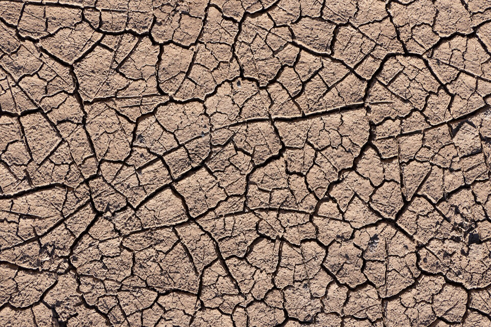
Understanding the Crisis
Nature is being pushed to its breaking point. UNEP names three linked threats we must address.

Long-term shifts in weather patterns and temperature.
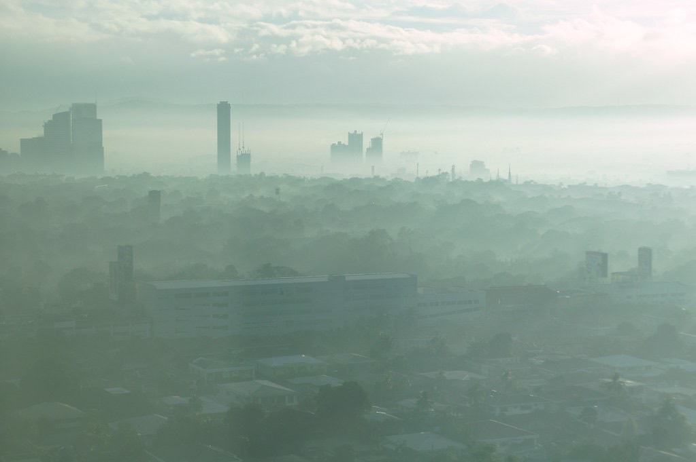
Contamination of the air by chemical, physical, or biological agents.
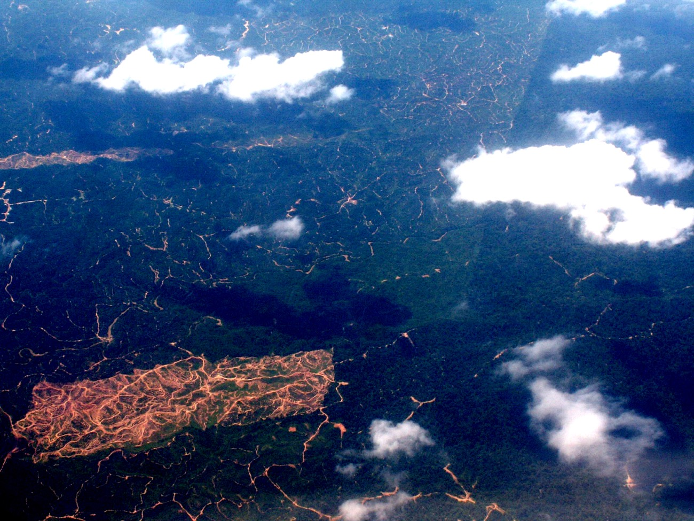
The worldwide decline of biological diversity and ecosystems.
Triple Planetary Crisis · 1 of 3
Climate change: long-term shifts in weather patterns and temperature that alter the ecosystems that support life.
Who is at fault?
Human activity is the main driver: energy use, factories, transport, agriculture, and buildings release greenhouse gases that trap heat.
Sunlight
Some heat escapes
Greenhouse gases
Heat trapped
Effects we already see
Droughts
Water scarcity
Wildfires
Rising sea levels
Flooding
Melting polar ice
Catastrophic storms
Triple Planetary Crisis · 2 of 3
WHO (2024): air pollution is contamination of indoor or outdoor air by any chemical, physical, or biological agent that changes the atmosphere.
It is a leading cause of disease and premature death, and it harms animals, plants, and even buildings.
Triple Planetary Crisis · 3 of 3
Biodiversity is the variety of all living things: ecosystems, plants, animals, habitats, and genes. We depend on it for food, water, shelter, and a stable climate.
Leading causes
Land use for food production
Overfishing
Habitat loss
Deforestation
Desertification
“Addressing the triple planetary crisis … has become our top development challenge.”
Karl Kendrick Chua, NEDA Secretary, 2022
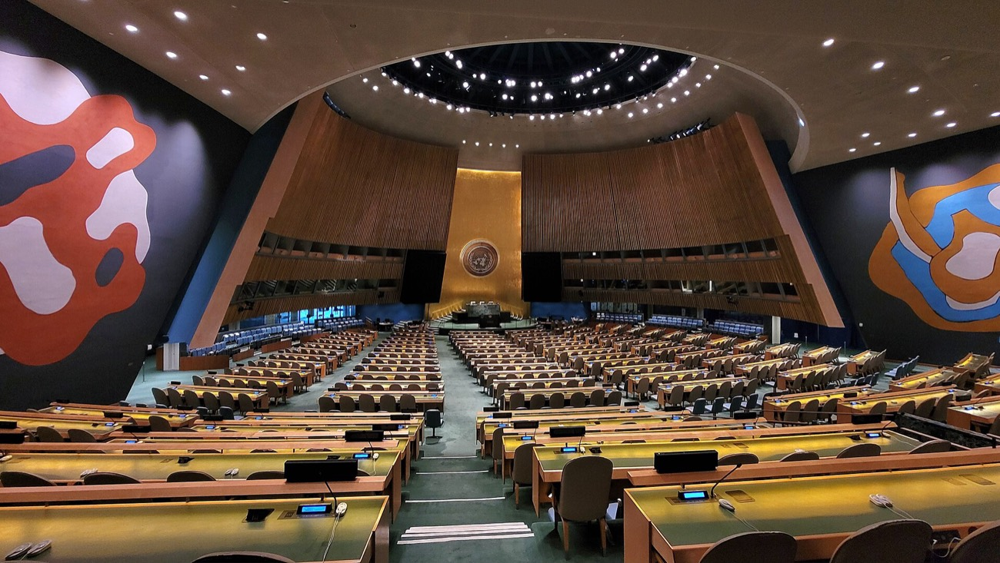
May 16, 1994
Experts in Geneva draft the first principles on human rights and the environment.
July 28, 2022
The UN General Assembly declares a clean, healthy, and sustainable environment a universal human right.
156 countries
now recognize the right, a key step against the triple planetary crisis.
Taking Care of Our Common Home
The right includes
1. Clean air
2. A safe and stable climate
3. Safe water and adequate sanitation
4. Healthy, sustainably produced food
5. Nontoxic places to live, work, study, and play
6. Healthy biodiversity and ecosystems
Taking Care of Our Common Home
“The duty to uphold the right to a healthy environment lies first and foremost with States … At the same time, everyone has an important role to play.”
United Nations Environment Programme (UNEP)
What this means for us
We may think there is nothing we can do, but we can. A true steward protects and nurtures resources rather than destroying or abusing them.
Activity
Scan the QR code in your book and read the Principles on Human Rights and the Environment. Which one do you see in your school or community?
Taking Care of Our Common Home
Reduce consumption. Use less; be mindful of what we use.
Choose eco-friendly products. Look for ecolabels.
Be a smart consumer. Buy only what you need.
Walk, cycle, or take public transport.
Volunteer with environmental groups.
Recycle. It saves energy, water, and resources.
Plant trees. They clean the air and create habitats.
Avoid burning trash, leaves, and branches.
Segregate waste at home.
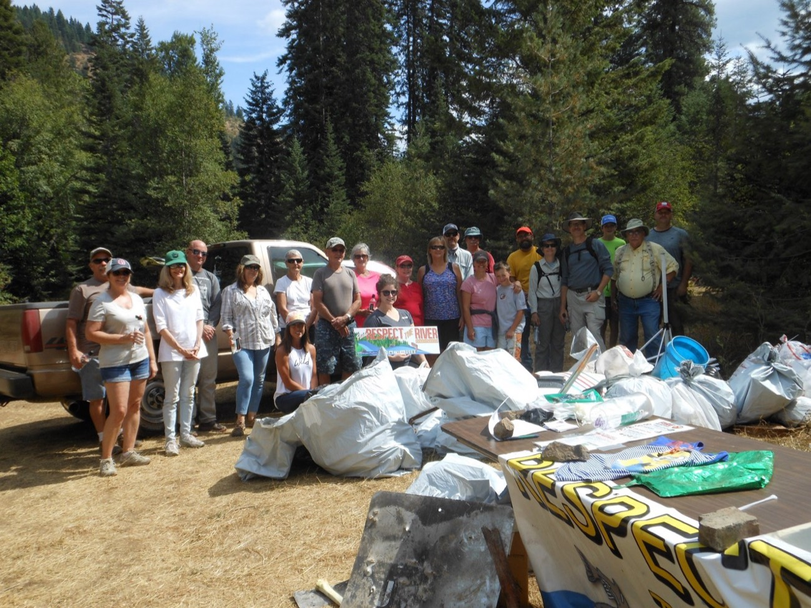
Character Quest
Rafael’s family loved weekend picnics by the river.
They found the riverbank full of trash and organized a clean-up with neighbors.
Together they picked up trash and sorted recyclables: a community effort.
By day’s end the river looked pristine. Small acts, done together, matter.
Character Quest
How did Rafael’s family respond when they saw the littered riverbank?
What did the clean-up teach the family about responsibility toward the environment?
How did inviting neighbors help make a bigger impact on the community?
What did Rafael learn about the importance of small actions in caring for nature?
How can families and communities keep working together to protect the environment?
Connect & Explore · Group Activity
Group Discussion. Brainstorm three actions families can take, like composting or saving energy.
Create Your Eco-Plan. For each action: a brief description, why it matters, and how your family will do it.
Prepare Your Presentation. Focus on the one action you are most excited to start, and its challenges.
Class Presentations. Share your three actions and the one you will start first.
Reflection. How do individual actions add up? How can we support one another?
Value Boosters · Activity 1
Bring recyclables from home: bottles, cans, paper, glass.
Sort them: plastic, paper, glass, metal.
In teams, sort and categorize the items.
Find the correct bin for each material.
Relay: run to the right bin; most items before time is up wins.
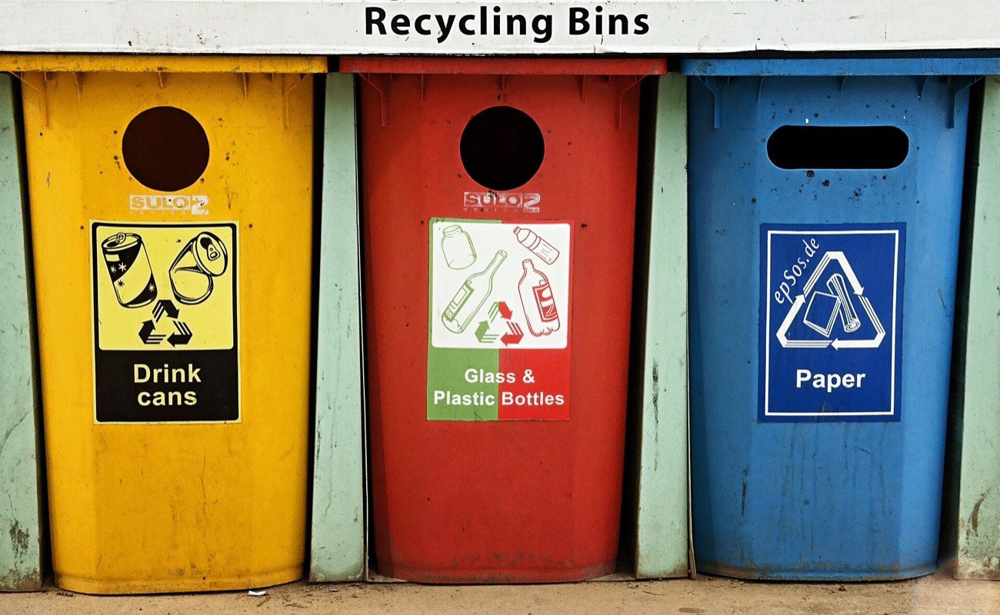
Discussion
1. How did you feel during the relay?
2. What did you learn about recycling?
3. How can your family reduce, reuse, and recycle?
Value Boosters · Activity 2
Pair up. Discuss why recycling matters for families and the challenges they face, then draft this outline and present it.
I. Introduction: definition, importance, benefits.
II. Current Practices: evaluate habits; find areas to improve.
III. Educating the Family: recycling facts; reducing waste.
IV. Recycling System: designate, label, and place bins.
V. Routines: sorting routines; roles for each member.
VI. Monitoring Progress: review, celebrate, adjust.
VII. Community Involvement: local programs and events.
VIII. Conclusion: key points; keep learning about recycling.
Value Boosters · Activity 3
Collect leaves, twigs, rocks, flowers, or recycled scraps.
Choose a theme: your family and nature, or why conservation matters.
Make a collage, sculpture, or painting.
Add a message about your family’s commitment to stewardship.
Display it where family and friends can see it.
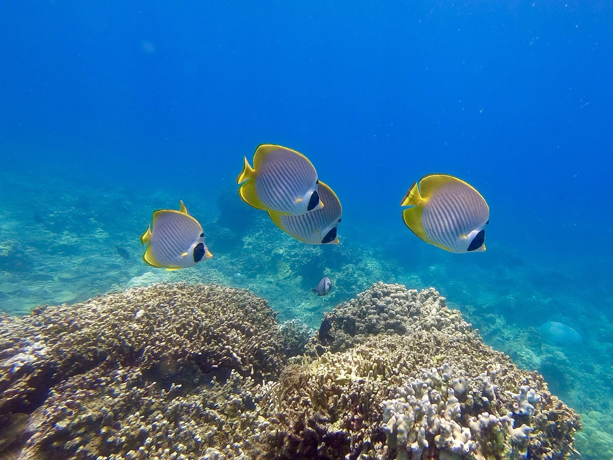
Reflect
1. What inspired your artwork?
2. How does it show your family’s connection to nature?
3. What message do you hope to convey?
A Story to Inspire
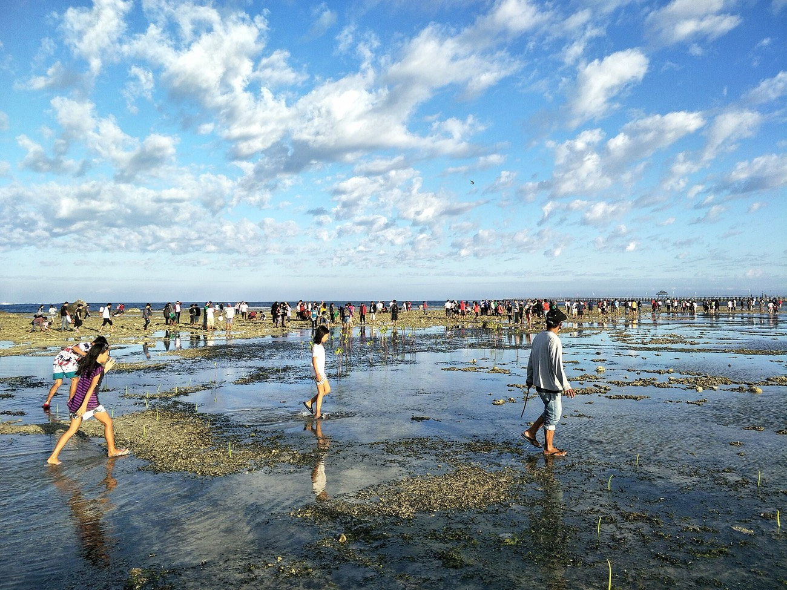
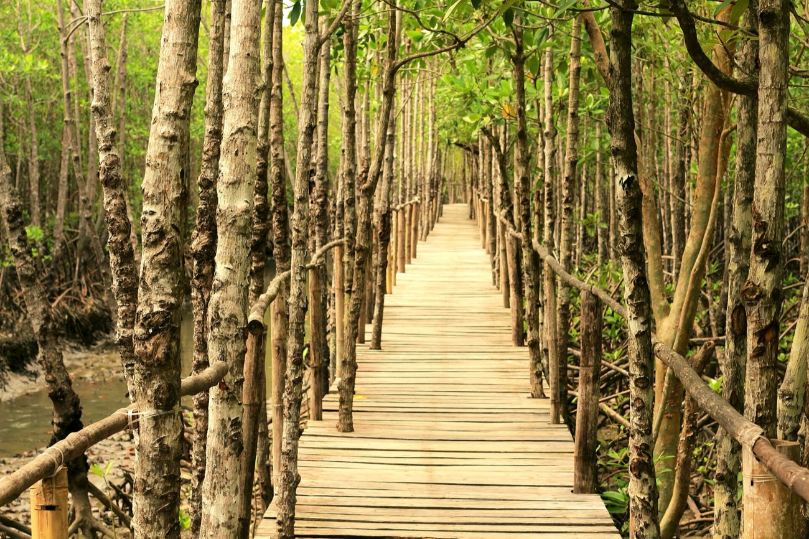
10,000
mangroves planted by Gary Dabasol, 65, from Leyte, in his own village.
Scan the QR code in your book to read his story, then answer:
1. Why did he decide to plant mangroves in his village?
2. How does his story inspire people to act for the environment?
On your way to school, spot an action for the environment: a project, slogan, poster, or rule.
Take a picture and explain how it helps the environment and the community.
Option 1. Join a tree-planting by your municipality, school, or an NGO. Document it with a photo and a one-paragraph insight.
Option 2. Organize a family tree-planting at home. Photograph each member planting a tree.
Journal
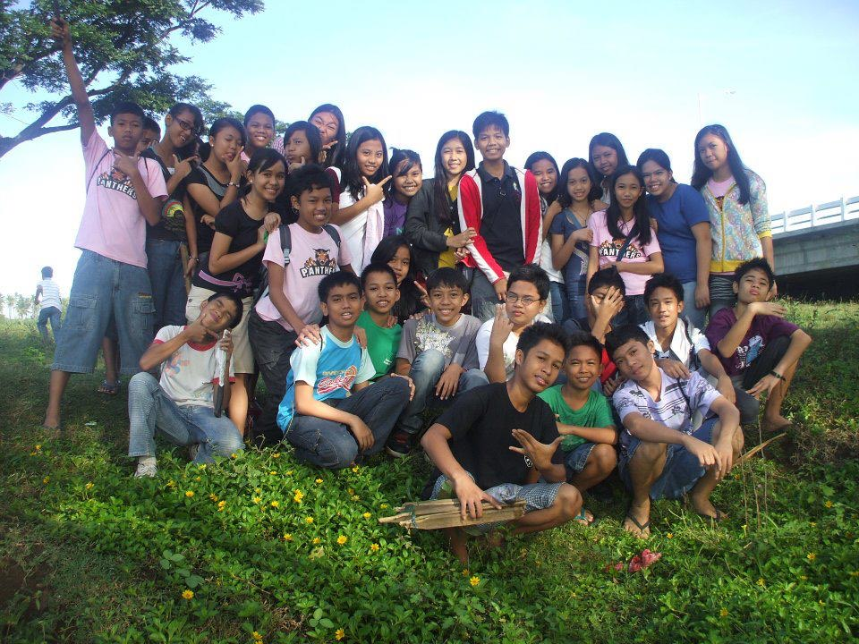
Family challenge: choose one eco-action to start this week.
Journal
Compose a poem on love for nature or Mother Earth that includes:
why we should take care of Mother Earth;
an appreciation of what nature gives us; and
an invitation for others to be custodians of the Earth.
“I think that I shall never seeA poem lovely as a tree.”
Joyce Kilmer, “Trees” (scan the QR code in your book)
Wrap-up
Stewardship: our duty to protect and care for the environment.
Abusing nature leads to the triple planetary crisis.
Climate change: long-term shifts in weather and temperature.
Air pollution: contamination of the air we breathe.
Biodiversity loss: the decline of living things and ecosystems.
In 2022 the UN declared a healthy environment a universal human right.
States hold the first duty, but everyone has a role.
The Philippines has acted; families can act too.
Heart in Action
The world around us, forests, rivers, and the air we breathe, is a precious gift from God. With this gift comes a responsibility.
Change begins at home. Small actions make a difference: recycling, conserving water, planting trees.
Reflection Moment
Write a reflection: how can your family care for the environment?
1. What actions can you take together?
2. How does caring for nature strengthen your bond with God and each other?
Our Only Home
By being stewards together: reduce, reuse, recycle, conserve water, plant trees, and invite others to join.
“And the LORD God took the man, and put him into the garden of Eden to dress it and to keep it.”
Genesis 2:15 (KJV)
Family challenge: choose one eco-action to start this week.
Next section
Click or press → to move · N notes · F full screen